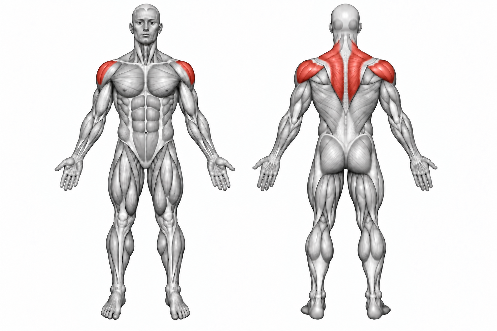
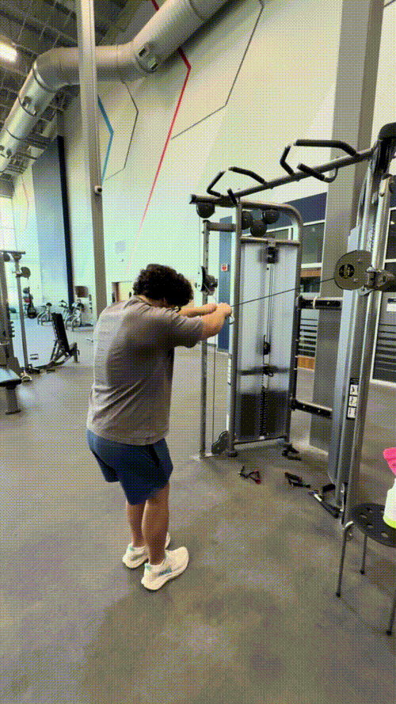

Reverse Cable Fly


How to Perform
Set the cable pulleys around shoulder height and stand between them. Grip the opposite handle with each hand and keep your arms slightly bent.
Pull your arms outward and backward in a wide arc until your arms are roughly in line with your body. Squeeze your rear shoulders, then return to the starting position under control.
Primary Muscles
Posterior deltoid (Rear Delt)
Secondary Muscles
Trapezius (Traps), rhomboid major (Rhomboids), and infraspinatus (Rotator Cuff)